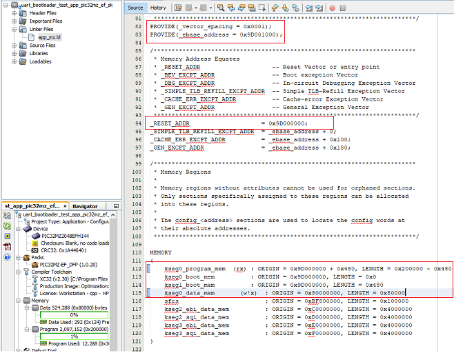

|
MPLAB Harmony Bootloader Help
|

PROVIDE(_vector_spacing = 0x0001); PROVIDE(_ebase_address = 0x9D001000); /* Interrupt vector table with vector offsets */ .vectors _ebase_address + 0x200 : { /* Symbol __vector_offset_n points to .vector_n if it exists, * otherwise points to the default handler. The * vector_offset_init.o module then provides a .data section * containing values used to initialize the vector-offset SFRs * in the crt0 startup code. */ . = ALIGN(4) ; __vector_offset_0 = (DEFINED(__vector_dispatch_0) ? (. - _ebase_address) : __vector_offset_default); KEEP(*(.vector_0)) ... ... /* Default interrupt handler */ . = ALIGN(4) ; __vector_offset_default = . - _ebase_address; KEEP(*(.vector_default)) } > kseg0_program_mem
For PIC32MZ
_RESET_ADDR = 0x9D000000;
kseg0_program_mem (rx) : ORIGIN = 0x9D000000 + 0x480, LENGTH = 0x200000 - 0x480
kseg0_data_mem (w!x) : ORIGIN = 0x80000000, LENGTH = 0x80000
kseg1_boot_mem : ORIGIN = 0x9D000000, LENGTH = 0x480
/* Boot Sections */
.reset _RESET_ADDR :
{
KEEP(*(.reset))
KEEP(*(.reset.startup))
} > kseg1_boot_mem
For PIC32MX
PROVIDE(_vector_spacing = 0x0001); PROVIDE(_ebase_address = 0x9D003000); _RESET_ADDR = 0x9D000000 + 0x1000; /* Size of Bootloader is 0x1000 */ kseg0_program_mem (rx) : ORIGIN = 0x9D001000, LENGTH = 0x7F000 - 0x1000 /* Size of Bootloader is 0x1000 */
/DISCARD/ : { *(.config_*) }|
MPLAB Harmony Bootloader Help
|